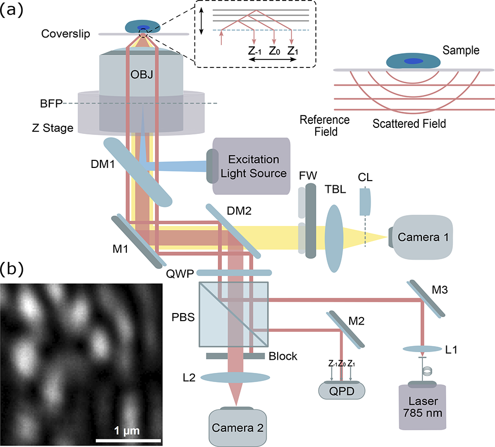

3D drift correction for super-resolution imaging with a single laser light
Optics Letters, 49(10), 2785-2788, 2024.
A single-laser strategy for simultaneous axial focus stabilization and lateral drift estimation in single-molecule localization microscopy.
* Equal contribution.